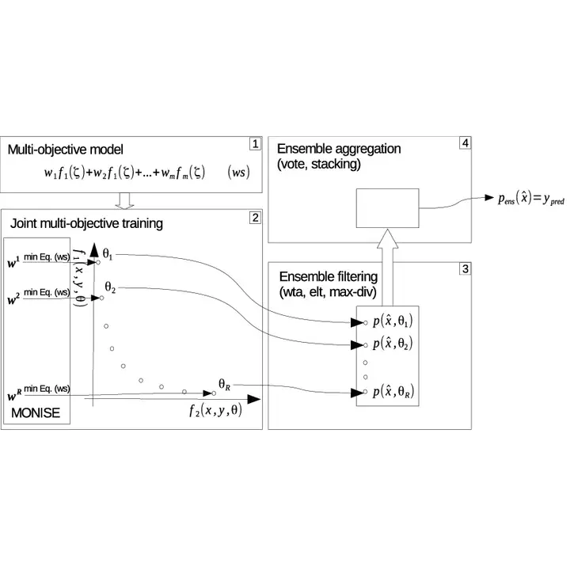

Overview of the multiobjective learning framework.
This research project is a framework using a posteriori multiobjective optimization to train generalized linear models. To deal with the multiple models resultant from the training I explored ensemble filtering and aggregation technique. One of the strengths of this framework resides in its flexibility, being applicable to multi-class and multi-label classification, transfer learning, multi-task learning, and multi-view learning.
Marcos M. Raimundo
Professor of Machine Learning and Optimization
My research interests include Machine Learning, Multi-objective Optimization, Ethical AI, mathematical programming.
Publications
Multinomial logistic loss and l2 regularization are often conflicting objectives as more robust regularization leads to restrained …
Marcos M Raimundo,
Thalita F Drumond,
Alan Caio R Marques,
Christiano Lyra,
Anderson Rocha,
Fernando J Von Zuben
On binary classification, the goal of minimizing the false positive and false negative rates creates a conflict, being impossible to …
Marcos M Raimundo,
Fernando J Von Zuben
M. M. Raimundo,
F. J. Von Zuben
This paper proposes multiobjective-based classifiers to detect epileptic seizures using ensemble approaches, transfer-learning methods, …
Fernando S. Beserra,
Marcos M. Raimundo,
Fernando J. Von Zuben
This paper proposes a many-objective ensemble-based algorithm to explore the relations among the labels on multilabel classification …
Marcos M. Raimundo,
Fernando J. Von Zuben
Due to the scarcity of well labeled epileptic seizure data and the usual rarity of seizure events of an average patient, it becomes …
Fernando S. Beserra,
Marcos M. Raimundo,
Fernando J. Von Zuben